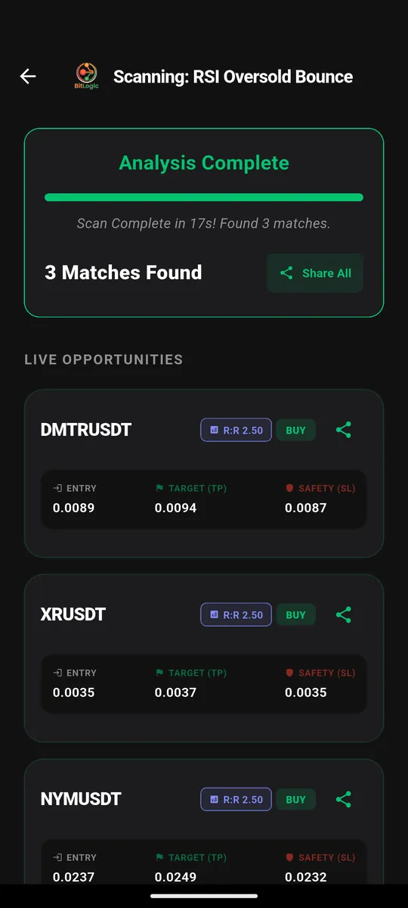
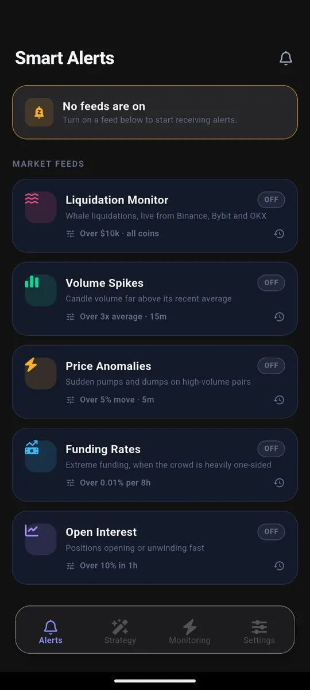
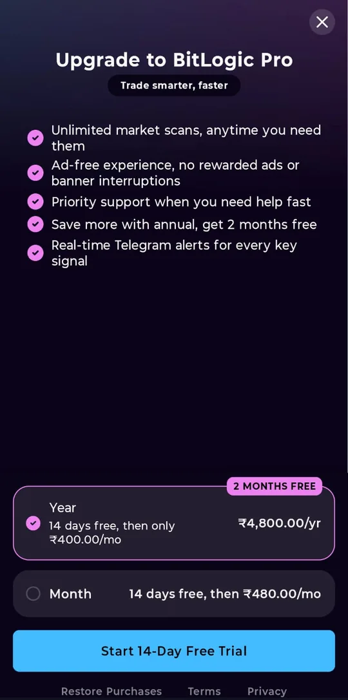

BitLogic vs TradingView vs 3Commas: Which One Do You Need?
Most "best crypto tool" comparisons pretend three products are competing for the same job. These three are not.
TradingView is a charting and analysis platform. 3Commas is a trade-execution bot service. BitLogic is a screener and alerting app for Android and Windows. You can happily use all three, and plenty of traders do.
This BitLogic vs TradingView vs 3Commas comparison covers what each one is actually built to do, what each costs, and, more usefully, where each one is the wrong choice.
Competitor plans and prices were checked on September 19, 2026 against TradingView's pricing page (India), 3Commas' pricing page and its supported exchanges page. Plans change; verify current pricing on each provider's own site before you buy. BitLogic is not affiliated with TradingView or 3Commas.
The Short Answer
| If you want to… | Use |
|---|---|
| Draw on charts, study setups, publish ideas | TradingView |
| Let bots place trades for you automatically | 3Commas |
| Find setups across a whole exchange and be told on your phone | BitLogic |
| Screen CoinDCX pairs specifically | BitLogic |
| Trade automatically without touching your phone | 3Commas |
| Spend nothing | BitLogic or TradingView's free plan |
What Each Tool Actually Does
TradingView: the analysis workspace
TradingView is the industry standard for charting. Hundreds of indicators, drawing tools, multi-chart layouts, Pine Script for custom studies, and a large community publishing scripts and ideas.
Its screener and alerts are genuinely good, but alert allowances are tied to your plan and the free plan is deliberately tight: 1 chart per tab, 2 indicators per chart and 3 price alerts, with no technical alerts. Technical alerts start on the Essential plan, which includes 20 price alerts and 20 technical alerts. Serious alerting means a paid plan.
What it is not: TradingView does not manage your positions. It shows you charts and tells you when your alerts fire; the trading happens elsewhere (or through a connected broker). See TradingView's official pricing page for current limits.
3Commas: the automation layer
3Commas runs bots that place real orders on your behalf: DCA bots, grid bots and signal bots, plus a demo account and webhook execution.
To do that it needs API keys to your exchange account. That is the trade-off at the centre of every bot service: real automation in exchange for granting a third party trading permission on your funds.
Its exchange list, as published on 3Commas' own exchanges page, covers nine venues: Binance, Hyperliquid, Bybit, OKX, Bitget, Gate, Kraken, KuCoin and Coinbase. CoinDCX is not on that list, which matters a great deal if you trade on India's largest exchange.
BitLogic: the screener in your pocket
BitLogic answers one question well: out of every pair on this exchange, which ones match my setup right now?
You build a rule, say RSI(14) below 30 on the 1-hour candle, and it tests the entire exchange. In the scan below it checked 400 CoinDCX spot pairs in 17 seconds and returned three matches, each with entry, target and stop:

It supports CoinDCX (spot and futures) alongside Binance, Bybit, OKX, Kraken, KuCoin, VALR, Bitstamp and Upbit. Want the full walkthrough? Read our step-by-step guide to screening crypto on CoinDCX.
Alerts come in two forms. First, five market-wide feeds (liquidations, volume spikes, price anomalies, funding rates and open interest), each with a threshold you set:

Second, Live Monitoring, which re-runs your own strategy in the background and pushes a notification the moment a pair matches, with the app closed:

On Pro, those same signals are delivered to Telegram, so they arrive wherever you already read messages rather than in a notification tray you have muted:

Like TradingView, it does not place trades. Unlike 3Commas, it never asks for API keys: it reads public market data only, so there is no key to leak. You can download BitLogic free on Google Play, get the Windows app, or try a basic scan in the free web screener first.
Feature Comparison
| BitLogic | TradingView | 3Commas | |
|---|---|---|---|
| Primary job | Screening + alerts | Charting + analysis | Bot execution |
| Screens a whole exchange | Yes | Yes (crypto screener) | No |
| Supports CoinDCX | Yes | Check symbol availability | No |
| Places trades | No | Via connected broker | Yes |
| Needs exchange API keys | No | No | Yes |
| Background alerts when app is closed | Yes | Yes (server-side) | Yes |
| Telegram delivery | Yes (Pro) | Via webhooks/integrations | Yes (notifications) |
| Custom scripting | No (rule builder) | Yes (Pine Script) | Pine Script execution (Pro plan and up) |
| Platforms | Android, Windows, basic web screener | Web, desktop and mobile apps | Web-based |
| Free plan | Yes | Yes (limited) | Trial only |
Price Comparison
Figures below are the published rates on September 19, 2026. BitLogic's are Indian pricing from the app's upgrade screen, TradingView's are Indian pricing on annual billing, and 3Commas' are in US dollars, showing the annual and monthly rate.
| Plan | BitLogic | TradingView | 3Commas |
|---|---|---|---|
| Free | Screener, alerts and live monitoring (guest scan limits apply) | 1 chart per tab, 2 indicators per chart, 3 price alerts | Trial only |
| Entry paid | Pro: ₹480/mo or ₹4,800/yr | Essential: ₹995/mo | Starter: $15–20/mo |
| Mid | — | Plus: ₹2,095/mo | Pro: $38–50/mo |
| High | — | Premium: ₹4,195/mo | Expert: $105–140/mo |
| Top | — | Ultimate: ₹17,333/mo | — |
BitLogic Pro is a single paid tier: real-time Telegram alerts, unlimited market scans, an ad-free experience with no rewarded ads or banners, and priority support. It starts with a 14-day free trial, and the annual plan saves two months. There is no higher plan to upsell you to.

Where Each One Loses
An honest comparison has to include the case against each tool.
Where BitLogic loses
- No charting workspace. For drawing, multi-chart layouts and deep visual analysis, TradingView is far better. BitLogic shows you matches, not a canvas.
- No trade execution. It will not open or close a position. If you want automation that trades while you sleep, that is 3Commas' job, not ours.
- No custom scripting. Rules are built from a fixed indicator library, not Pine Script.
- The full experience is app-based. Background monitoring and push alerts live in the Android and Windows apps; the web screener is a basic, manual version.
Where TradingView loses
- Alerts are rationed by plan. The free plan's 3 price alerts do not cover a watchlist, and alert counts are a core reason people upgrade.
- It is an analysis tool, not a monitor. Scanning a whole exchange repeatedly in the background and pushing you results is not what it is designed around.
- Cost scales steeply if you only wanted alerts. Premium is ₹4,195/month on annual billing, which is a lot to pay for alert headroom.
Where 3Commas loses
- API keys. You must grant trading access to your exchange account. Many traders draw the line there, and that is a reasonable place to draw it.
- No free plan. It is a paid product after the trial, starting at $15–20/month.
- No CoinDCX support, so Indian traders on CoinDCX cannot automate there at all.
- Automation is not analysis. A bot executes rules; it does not help you find or evaluate setups.
Which Combination Makes Sense
Most BitLogic vs TradingView vs 3Commas decisions end with two tools, not one.
- Analysis + alerts: TradingView for study, BitLogic for exchange-wide scanning and phone alerts. This is the common pairing for anyone who trades CoinDCX. Our prebuilt strategy library is a good place to start scanning.
- Analysis + automation: TradingView for study, 3Commas to execute, if you are comfortable with API keys and your exchange is on their list.
- Free-only: BitLogic's free tier plus TradingView's free plan covers finding and studying setups at zero cost.
The question is not which product is best. It is which job you are trying to do today.
FAQ
Is BitLogic a TradingView alternative?
Partly. For screening an exchange and receiving alerts on your phone, yes. TradingView's free plan includes only 3 price alerts and no technical alerts, while BitLogic's alert feeds are free. For charting, drawing and Pine Script, TradingView remains the better tool, and many traders run both. See our guide to using BitLogic as a free TradingView alternative for crypto alerts.
Is BitLogic a 3Commas alternative?
No, and it is worth being clear about that. 3Commas places trades through your exchange API keys; BitLogic never places a trade and never asks for keys. If you specifically want bots executing orders, 3Commas does something BitLogic does not.
Can I use 3Commas or TradingView with CoinDCX?
3Commas does not list CoinDCX among its nine supported exchanges, so its bots cannot trade there. For TradingView, check its symbol search for the exact CoinDCX pair you want, as availability varies. BitLogic screens CoinDCX spot and futures pairs directly.
Which is cheapest?
BitLogic's core screener and alerts are free, and Pro is a single paid tier at ₹480/month or ₹4,800/year in India, with a 14-day free trial. TradingView has a limited free plan and paid plans from ₹995/month on annual billing. 3Commas has no free plan beyond a trial, with paid plans from $15–20/month.
Do I need all three?
Very few people do. Pick by job: charting (TradingView), finding setups and alerts (BitLogic), automated execution (3Commas).
The Bottom Line
That is the honest summary of BitLogic vs TradingView vs 3Commas: three tools, three jobs. TradingView wins on charting. 3Commas wins on execution. BitLogic wins on finding setups across an entire exchange, including CoinDCX, and telling you the moment one appears, without asking for API keys or a monthly fee to get started.
If your problem is "I can't watch 400 pairs at once," that is the problem BitLogic was built for. Download BitLogic free on Google Play, scan your first exchange in minutes, and start a 14-day Pro trial when you want alerts in Telegram.
Educational content only, not financial advice. No tool removes risk from trading. TradingView and 3Commas are trademarks of their respective owners and are referenced here for comparison only.